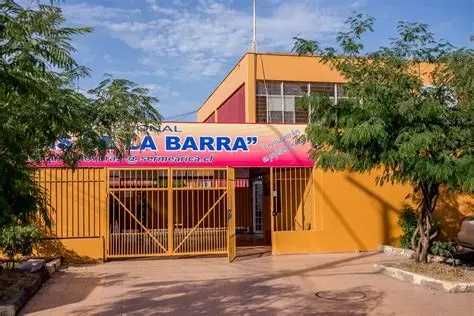
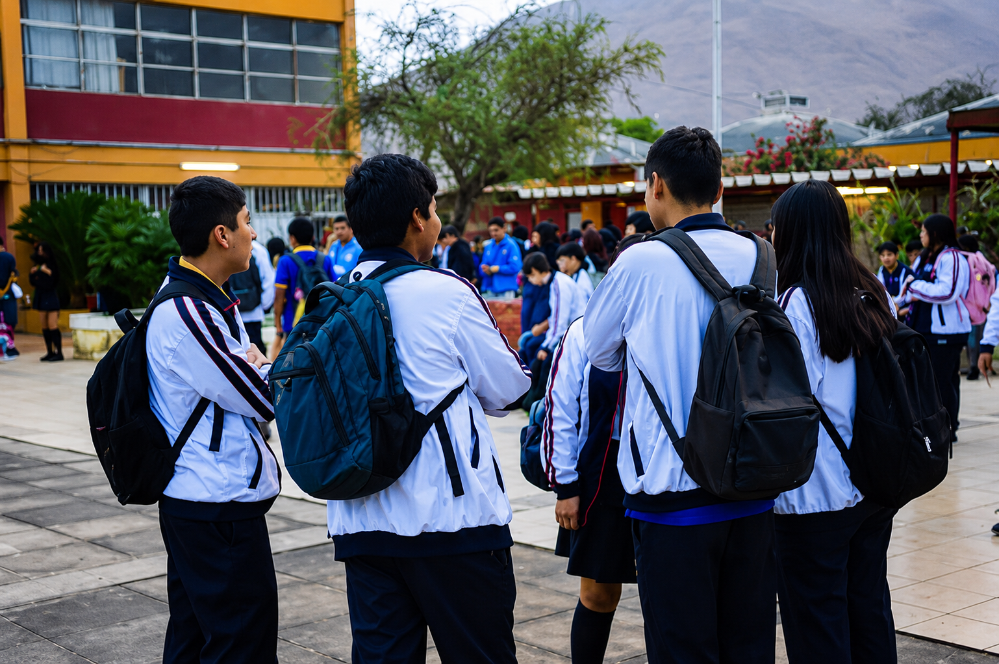
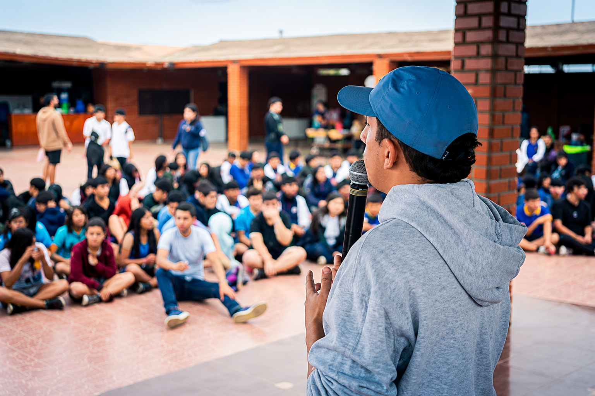

LiceoMap.
Arica • Chile
Arica • Chile

Plataforma digital de orientación espacial, consulta de horarios por RUT y comunicación directa en tiempo real para la comunidad del Liceo Antonio Varas de la Barra.

Sabemos lo complejo que puede ser para los estudiantes de enseñanza media orientarse en el establecimiento durante los primeros días o encontrar salas de laboratorios específicas. LiceoMap conecta la arquitectura física del establecimiento con la tecnología móvil cotidianamente usada por los alumnos.
Desliza lateralmente para descubrir cómo LiceoMap transforma la experiencia diaria dentro de tu Liceo.
Encuentra tu aula en segundos. Filtra por pabellón, piso o especialidad técnica y obtén la ruta directa en el mapa.
Al iniciar sesión con tu RUT y contraseña, la app reconoce tu curso automáticamente y te muestra los bloques del día sin enredos.
La biblioteca es un punto muy importante del nuestro liceo B4 y es de nuestro agrado informarles de ella.
Con nuestra aplicacion, Buscamos mantenerte informado en todo momento para que sepas donde estas, seleccionando el sector deseado se te abrira la informacion de la sala.
Tambien buscamos una comunicacion mas directa entre liceo y estudiante, con la aplicacion el liceo podra enviarte notificaciones a tu telefono directamente, inforamandote sobre salidas mas temprano, emergencias o alguna que otra noticia de el liceo mismo.

LiceoMap inicia como una iniciativa de innovación tecnológica en el Liceo Antonio Varas de la Barra (B4). Nuestra meta es validar el sistema aquí y posteriormente adaptar el motor interactivo para cualquier establecimiento del país que requiera modernizar su orientación escolar.
Así visualizan los estudiantes la información crítica enviada por los inspectores y dirección del colegio.
Por disposición oficial, la jornada de la tarde finalizará a las 13:00 hrs. La app mantendrá informada a la comunidad.
Revisa la actualización en la distribución de los bloques académicos para los terceros y cuartos medios técnico-profesionales.
Biblioteca estara cerrada el tercer bloque por x motivo.
La aplicación cuenta con un sistema de autenticación seguro. Al escribir tu RUT, el sistema deduce tu curso automáticamente.
LiceoMap App Login